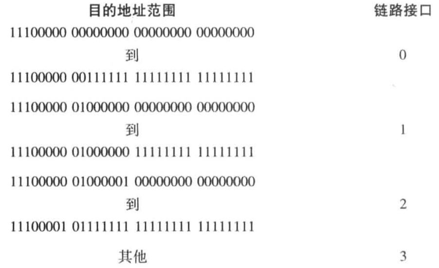

计算机网络：自顶向下方法 题解
Table of Contents
1 习题
1.1 P1 基于目的地转发的限制
考虑下面的网络。
- 显示路由器A中的转发表，使得目的地为主机H3的所有流量都通过接口3转发。
- 写出路由器A中的转发表，使得从H1发往主机H3的所有流量都通过接口3转发，从H2发往主机H3的所有流量都通过接口4转发。（提示：这是一个技巧性的问题。）
目的地址 输出 H3 3 - 路由器使用基于目的地转发时只能根据目的地转发数据报，因此不能根据不同源主机将数据报转发到不同接口。
1.2 P2
假设两个分组在完全相同的时刻到达一台路由器的两个不同输入端口。同时假设在该路由器中没有其他分组。
- 假设这两个分组朝着两个不同的输出端口转发。当交换结构使用一条共享总线时，这两个分组可能在相同时刻通过该交换结构转发吗？
- 假设这两个分组朝着两个不同的输出端口转发。当交换结构使用经内存交换时，这两个分组可能在相同时刻通过该交换结构转发吗？
- 假设这两个分组朝着相同的输出端口转发。当交换结构使用纵横式时，这两个分组可能在相同时刻通过该交换结构转发吗？
- 不能，因为一次只有一个分组能够跨越总线。
- 不能，因为经过共享系统总线一次仅能执行一个内存读写。
- 不能，输出端口相同时，相当于共享了一部分总线。
1.3 P3 交换结构时延
在4.2节中，我们注意到如果交换结构速率是输入线路速率的n倍，其最大的排队时延为(n-1)D。假设所有分组有相同长度，在相同时刻n个分组到达n个输出端口，同时所有n个分组要转发到不同的输出端口。对于内存、总线和纵横式交换结构，一个分组的最大时延是多少？
(n-1)D
(n-1)D
0
1.4 P4 交换结构调度
考虑下列交换机。假设所有数据报具有相同长度，交换机以一种分时隙、同步的方式运行，在一个时隙中一个数据报能够从某输入端口传送到某输出端口。其交换结构是纵横式的，因此在一个时隙中至多一个数据报能够传送到一个给定输出端口，但在一个时隙中不同的输出端口能够接收到来自不同输入端口的数据报，从输入端口到它们的输出端口传送所示的分组，所需的时隙数量最小是多少？此时假定使用你所需要的任何输入排队调度方法（即此时没有HOL阻塞）。假定采用你能够设计的最差情况下的调度方案，且非空输入队列不会空闲，所需的时隙数量最大是多少？
| 时隙1 | 时隙2 | 时隙3 |
|---|---|---|
| X |
||
| Z Y | Z |
| 时隙1 | 时隙2 | 时隙3 |
|---|---|---|
| X Y | X |
|
| Z |
两种情况都是3个时隙。
1.5 P5 地址范围转换为最长前缀匹配
考虑使用32比特主机地址的某数据报网络。假定一台路由器具有4条链路，编号为0~3，分组能被转发到如下的各链路接口：

- 提供一个具有5个表项的转发表，使用最长前缀匹配，转发分组到正确的链路接口。
描述你的转发表是如何为具有下列目的地址的数据报决定适当的链路接口的。
11001000 10010001 01010001 01010101 11100001 01000000 11000011 00111100 11100001 10000000 00010001 01110111
目的地址 链路接口 11100000 00 0 11100000 01000000 1 1110000 2 11100001 1 3 其他 3 - 3
2
3
1.6 P6 最长前缀匹配与地址范围
考虑使用8比特主机地址的某数据报网络。假定一台路由器使用最长前缀匹配并具有下列转发表：
| 前缀匹配 | 接口 |
|---|---|
| 00 | 0 |
| 010 | 1 |
| 011 | 2 |
| 10 | 2 |
| 11 | 3 |
对这4个接口中的每个，给出相应的目的主机地址的范围和在该范围中的地址数量。
| 前缀匹配 | 目的地址范围 | 地址数量 |
|---|---|---|
| 00 | 0000 0000 ~ 0011 1111 | 2^6 |
| 010 | 0100 0000 ~ 0101 1111 | 2^5 |
| 011 | 0110 0000 ~ 0111 1111 | 2^5 |
| 10 | 1000 0000 ~ 1011 1111 | 2^6 |
| 11 | 1100 0000 ~ 1111 1111 | 2^6 |
1.7 P7
考虑使用8比特主机地址的数据报网络。假定一台路由器使用最长前缀匹配并具有下列转发表：
| 前缀匹配 | 接口 |
|---|---|
| 1 | 0 |
| 10 | 1 |
| 111 | 2 |
| 其他 | 3 |
对这4个接口中的每个，给出相应的目的主机地址的范围和在该范围中的地址数量。
| 前缀匹配 | 前三位 | 地址范围 | 地址数量 |
|---|---|---|---|
| 1 | 110 | 1100 0000 ~ 1101 1111 | 2^5 |
| 10 | 100 101 | 1000 0000 ~ 1011 1111 | 2^6 |
| 111 | 111 | 1110 0000 ~ 1111 1111 | 2^5 |
| 其他 | 0000 0000 ~ 0111 1111 | 2^7 |
1.8 P8 子网与接口数量
考虑互联3个子网（子网1、子网2和子网3）的一台路由器。假定这3个子网的所有接口要求具有前缀223.1.17/24。还假定子网1要求支持多达60个接口，子网2要求支持多达90个接口，子网3要求支持多达12个接口。提供3个满足这些限制的网络地址（形式为a.b.c.d/x）。
223.1.17.0/26
223.1.17.128/25
223.1.17.192/28
1.9 P9 子网掩码记法
在4.2.1节中给出了一个转发表（使用最长前缀匹配）的例子。使用a.b.c.d/x记法代替二进制字符串记法，重写该转发表。
| 二进制记法 | 子网掩码记法 |
|---|---|
| 11001000 00010111 00010 | 200.23.16/21 |
| 11001000 00010111 00011000 | 200.23.24/24 |
| 11001000 00010111 00011 | 200.23.24/21 |
1.10 P10
在习题P5中要求你给出转发表（使用最长前缀匹配）。使用a.b.c.d/x记法代替二进制字符串记法，重写该转发表。
| 二进制记法 | 子网掩码记法 |
|---|---|
| 11100000 00 | 224.0/10 |
| 11100000 01000000 | 224.64/16 |
| 1110000 | 224/7 |
| 11100001 1 | 225.128/9 |
1.11 P11
考虑一个具有前缀128.119.40.128/26的子网。给出能被分配给该网络的一个IP地址（形式为XXX.XXX.XXX.XXX）的例子。假定一个ISP拥有形式为128.119.40.64/26的地址块。假定它要从该地址块生成4个子网，每块具有相同数量的IP地址。这4个子网（形式为a.b.c.d/x）的前缀是什么？
- 128.119.40.128
128.119.40.64/26最后8位是0100 0000，均分给4个子网需要用掉2位：
0100 0000 128.119.40.64/28 0101 0000 128.119.40.80/28 0110 0000 128.119.40.96/28 0111 0000 128.119.40.112/28
1.12 P12 子网划分
考虑图4-20中显示的拓扑。（在12:00以顺时针开始）标记具有主机的3个子网为网络A、B和C，标记没有主机的子网为网络D、E和F。
- 为这6个子网分配网络地址，要满足下列限制：所有地址必须从214.97.254/23起分配；子网A应当具有足够地址以支持250个接口；子网B应当具有足够地址以支持120个接口；子网C应当具有足够地址以支待120个接口。当然，子网D、E和F应当支持两个接口。对于每个子网，分配采用的形式是a.b.c.d/x或a.b.c.d/x~e.f.g.h/y。
- 使用你对（a）部分的答案，为这3台路由器提供转发表（使用最长前缀匹配）。

1.13 P13 大学IP地址块和服务器位置
使用美国因特网编码注册机构 (http://www.arin.net/whois) 的whois服务来确定三所大学所用的IP地址块。whois服务能被用于确定某个特定的IP地址的确定地理位置吗？使用 www.maxmind.com 来确定位于这三所大学的Web服务器的位置。
❯ dig nyu.edu ; <<>> DiG 9.10.6 <<>> nyu.edu ;; global options: +cmd ;; Got answer: ;; ->>HEADER<<- opcode: QUERY, status: NOERROR, id: 49081 ;; flags: qr rd ra; QUERY: 1, ANSWER: 1, AUTHORITY: 3, ADDITIONAL: 6 ;; OPT PSEUDOSECTION: ; EDNS: version: 0, flags:; udp: 4096 ;; QUESTION SECTION: ;nyu.edu. IN A ;; ANSWER SECTION: nyu.edu. 550 IN A 216.165.47.10 ;; AUTHORITY SECTION: nyu.edu. 34436 IN NS ns1.nyu.net. nyu.edu. 34436 IN NS ns4.nyu.edu. nyu.edu. 34436 IN NS ns2.nyu.org. ;; ADDITIONAL SECTION: ns1.nyu.net. 27920 IN A 128.122.0.8 ns2.nyu.org. 27918 IN A 128.122.0.76 ns4.nyu.edu. 3707 IN A 3.226.48.68 ns1.nyu.net. 27920 IN AAAA 2607:f600:1001:6100::8 ns2.nyu.org. 27918 IN AAAA 2607:f600:1001:6000::76 ;; Query time: 23 msec ;; SERVER: 192.168.8.1#53(192.168.8.1) ;; WHEN: Thu Oct 28 11:24:45 CST 2021 ;; MSG SIZE rcvd: 224 ❯ whois 216.165.47.10 % IANA WHOIS server % for more information on IANA, visit http://www.iana.org % This query returned 1 object refer: whois.arin.net inetnum: 216.0.0.0 - 216.255.255.255 organisation: ARIN status: ALLOCATED whois: whois.arin.net changed: 1998-04 source: IANA # whois.arin.net NetRange: 216.165.0.0 - 216.165.127.255 CIDR: 216.165.0.0/17 NetName: NYU-NET2 NetHandle: NET-216-165-0-0-1 Parent: NET216 (NET-216-0-0-0-0) NetType: Direct Assignment OriginAS: Organization: New York University (NYU) RegDate: 1999-08-11 Updated: 2017-11-27 Comment: Please query Merit's RADb for up to date information on allocations, routing policy, and contacts. Comment: Comment: whois -h whois.radb.net Comment: Comment: www.ra.net Ref: https://rdap.arin.net/registry/ip/216.165.0.0
1.14 P14 分片
考虑向具有700字节MTU的一条链路发送一个2400字节的数据报。假定初始数据报标有标识号422。将会生成多少个分片？在生成相关分片的数据报中各个字段的值是多少？
根据RFC791，片偏移以64bit为单位。
1.15 P15
假定在源主机A和目的主机B之间的数据报被限制为1500字节（包括首部）。假设IP首部为20字节，要发送一个5MB的MP3文件需要多少个数据报？解释你的答案是如何计算的。
⌈5e6/(1500-20TCP-20IP)⌉ = 3425
1.16 P16 NAT
考虑在图4-25中建立的网络。假定ISP现在为路由器分配地址24.34.112.235，家庭网络的网络地址是192.168.1/24。
- 在家庭网络中为所有接口分配地址。
- 假定每台主机具有两个进行中的TCP连接，所有都是针对主机128.119.40.86的80端口的。在NAT转换表中提供6个对应表项。
1.17 P17
假设你有兴趣检测NAT后面的主机数量。你观察到在每个IP分组上IP层顺序地标出一个标识号。由一台主机生成的第一个IP分组的标识号是一个随机数，后继IP分组的标识号是顺序分配的。假设由NAT后面主机产生的所有IP分组都发往外部。
- 基于这个观察，假定你能够俘获由NAT向外部发送的所有分组，你能概要给出一种简单的技术来检测NAT后面不同主机的数量吗？评估你的答案。
- 如果标识号不是顺序分配而是随机分配的，这种技术还能正常工作吗？评估你的答案。
- 连续的标识号指示一台主机。
- 不能。
1.18 P18 NAT与TCP连接
在这个习题中，我们将探讨NAT对P2P应用程序的影响。假定用户名为Arnold的对等方通过查询发现，用户名为Bernard的对等方有一个要下载的文件。同时假定Bernard和Arnold都位于NAT后面。尝试设计一种技术，使得Arnold与Bernard创建一条TCP连接，而不对NAT做应用特定的配置。如果难以设计这样的技术，试讨论其原因。
为了在Arnold和Bernard之间创建一条TCP连接，Arnold或Bernard必须向对方发起连接。但是，Arnold和Bernard的外层的NAT会丢弃从WAN端到达的SYN数据包。因此，如果Arnold和Bernard都在NAT后面，他们都不能发起建立与对方的TCP连接。
1.19 P19 通用转发与流表
考虑显示在图4-30中的SDN OpenFlow网络。假定对于到达s2的数据报的期望转发行为如下：
- any datagrams arriving on input port 1 from hosts h5 or h6 that are destined to hosts h1 or h2 should be forwarded over output port 2;
- any datagrams arriving on input port 2 from hosts h1 or h2 that are destined to hosts h5 or h6 should be forwarded over output port 1;
- any arriving datagrams on input ports 1 or 2 and destined to hosts h3 or h4 should be delivered to the host specified;
- hosts h3 and h4 should be able to send datagrams to each other.
详述实现这种转发行为的s2中的流表项。
| 匹配 | 动作 |
|---|---|
| Ingress Port = 1; IP Src = 10.3.*.*; IP Dst = 10.1.*.* | Forward(2) |
| Ingress Port = 2; IP Src = 10.1.*.*; IP Dst = 10.3.*.* | Forward(1) |
| Ingress Port = 1; IP Dst = 10.2.0.3; | Forward(3) |
| Ingress Port = 2; IP Dst = 10.2.0.3; | Forward(3) |
| Ingress Port = 1; IP Dst = 10.2.0.4; | Forward(4) |
| Ingress Port = 2; IP Dst = 10.2.0.4; | Forward(4) |
| Ingress Port = 3; IP Dst = 10.2.0.4; | Forward(4) |
| Ingress Port = 4; IP Dst = 10.2.0.3; | Forward(3) |
1.20 P20
再次考虑显示在图4-30中的SDN OpenFlow网络。假定在s2对于来自主机h3或h4的数据报的期望转发行为如下：
- 任何来自主机h3并且发往主机h1、h2、h5或h6的数据报应当在网络中以顺时针方向转发。
- 任何来自主机h4并且发往主机h1、h2、h5或h6的数据报应当在网络中以逆时针方向转发。
详述实现这种转发行为的s2中的流表项。
| 匹配 | 动作 |
|---|---|
| Ingress Port = 3; IP Dst = 10.2.0.1; | Forward(2) |
| Ingress Port = 3; IP Dst = 10.2.0.2; | Forward(2) |
| Ingress Port = 3; IP Dst = 10.2.0.5; | Forward(2) |
| Ingress Port = 3; IP Dst = 10.2.0.6; | Forward(2) |
| Ingress Port = 4; IP Dst = 10.2.0.1; | Forward(1) |
| Ingress Port = 4; IP Dst = 10.2.0.2; | Forward(1) |
| Ingress Port = 4; IP Dst = 10.2.0.5; | Forward(1) |
| Ingress Port = 4; IP Dst = 10.2.0.6; | Forward(1) |